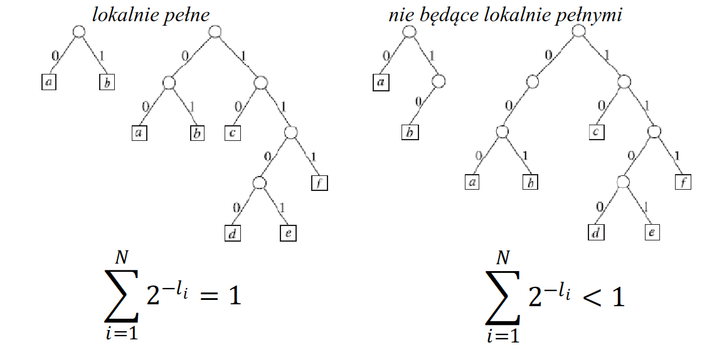

Podstawy teorii informacji
Źródło danych
- Źródło danych generuje zdarzenia (symbole) zgodnie z pewnym
rozkładem prawdopodobieństwa
- proces stochastyczny
- Zbiór wszystkich możliwych wartości symboli to alfabet
- Modele dyskretne zakładają, że źródło jest
- stacjonarne - prawdopodobieństwo niezmienne w czasie
- egodyczne - każda generowana sekwencja ma te same właściwości statystyczne
Informacja
- Każde zdarzenie niesie ze sobą pewną informację \(i(A)\)
- większe prawdopodobieństwo - mniej informacji
- mniejsze prawdopodobieństwo - więcej informacji
- Miara informacji - \(i(A) = \log_b \frac{1}{p(A)} = -\log_b(p(A))\)
- Ilość informacji dla dwóch niezależnych zdarzeń jest addytwna
- \(i(AB) = i(A) + i(B)\)
- Podstawy logarytmu - różne jednostki wartościowania
- konwersja przez wymnożenie przez stałą
- 2 - bit
- 256 - bajt
- 10 - hartley
- e - nat
Entropia
- Średnia informacja symboli źródła ważona prawdopodobieństwami
- \(H = \sum_n p(A_n)i(A_n) = -\sum_n p(A_n) \log_b(p(A_n))\)
- Wyznacza dolną granicę kompresji bezstratnej
- Większa entropia - większa średnia informacja
- małe prawdopodobieństwo - duża entropia
- Źródło stanowią wszystkie elementy ścieżki przetwarzania
uczestniczące w formowaniu symboli
- każdy element może zmieniać rozkłady prawdopodobieństw
- obraz + predykcja pikseli ma inny rozkład niż sam obraz (i inną entropię)
System kodowania
- Kod - reguła (algorytm) tworzenia reprezentacji kodowej (efektywnego ciągu bitowego) danych źródłowych
- Kodek - (koder + dekoder) realizacja algorytmu kodowania (oprogramowanie, sprzęt)
- Kodowanie - proces tworzenia reprezentacji kodowej (koderem wg. ustalonego kodu)
- Dekodowanie - proces odtwarzania reprezentacji źródłowej z kodowej
- Źródło -> koder -> dekoder -> rekonstrukcja
Koder binarny
- Przetwarza sekwenję symboli wejściowych na sekwencję bitów
- Może bazować na książce kodów
- każdy symbol musi mieć przypisane inne słowo kodowe (sekwencję bitów)
- sekwencja symboli zamieniana na sekwencję słów kodowych przyrostowo
- istotne są tylko kodu jednoznacznie dekodowalne
- Algorytm kodowania przyrostowego
- odczytaj z wejścia symbol do zakodowania
- jeśli wejście puste to zakończ i zamknij strumień
- emituj na wyjście słowo kodowe wczytanego symbolu
- powtórz
Kody przedrostkowe
- Szczególna grupa kodów jednoznacznie dekodowalnych
- Żadne słowo kodowe nie jest przedrostkiem innego słowa kodowego
- Każdy przedrostkowy jest jednoznacznie dekodowalny, nie każdy jednoznacznie dekodowalny jest przedrostkowy
Warunek sumy dwójkowej
- Jeśli kod jest jednoznacznie dekodowalny to długości słów kodowych
\(l_1, \ldots, l_N\) spełniają warunek
sumy dwójkowej
- nierówność Krafta-McMillana
- \(\sum_{i=1}^N2^{-l_i} \le 1\)
- Jeśli ciąg liczb spełnia warunek sumy dwójkowej to istnieje kod przedrostkowy o N słowach i takich długościach
- Każdy kod jednoznacznie dekodowalny można przekształcić zachowując długość słów kodowych w kod przedrostkowy
- Kod można wtedy wyrazić drzewem
- najlepiej jeśli drzewo jest lokalnie pełne
- każdy węzeł niebędący liściem ma 2 potomków
- w przeciwnym przypadku kod nadal jest dekodowalny ale jest mniej efektywny
- każdy bit długości przepoławia wagę sumowanego czynnika
- dwie połowy sumują się do wagi węzła
- Ze względu na proste dekodowanie, w praktyce stosuje się kody przedrostkowe

Dekoder przedrostkowy
- Zainicjuj bufor \(\alpha\)
- Jeśli wejście puste to zakończ
- Odczytaj bit z wejścia i dopisz do \(\alpha\)
- Jeśli \(\alpha\) jest słowem kodowym dla pewnego symbolu \(\sigma\) to emituj na wyjście \(\sigma\) i powtarzaj od kroku 1.
- Powtarzaj od kroku 3.
Kody o stałej długości
- Najprostszy kod binarny to kod stałej długości
- Słowo kodowe to pozycja w alfabecie w naturalnym kodzie binarnym
- Wszystkie słowa mają taką samą długość wynikająca z liczby symboli w alfabecie
- Przypisanie słów kodowych do symboli zależy od pozycji symbolu alfabecie
Kody o zmiennej długości
Zmienianie długości może bardzo mocno skrócić strumień kodowy
Optymalny kod przedrostkowy
- Najlepszy jest ten kod, który zakoduje sekwencję symboli na najmniejszej liczbie bitów
- Zależy od rozkładu prawdopodobieństw symboli w alfabecie
- krótsze słowa kodowe dla częściej występujących symboli
- Miara optymalności kodu to średnia długość słowa kodowego \(\sum_i p_i l_i\)
- Własności
- dwa symbole o najmniejszym prawdopodobieństwie mają najdłuższe słowa kodowe \(c\) i \(d\) o takiej samej długości
- dla każdego słowa kodowego \(k\) istnieje słowo kodowe \(k'\) różniące się ostatnim bitem
- połączenie 2 symboli o min. prawdopodobieńśtwie w supersymbol o słowie kodowym \(c\) bez ostatniego bitu daje kod optymalne dla nowego alfabetu o mniejszej liczbie symboli
- suma dwójkowa równa 1
Algorytm Huffmana
- Znajdź 2 symbole o najmniejszych prawdopodobieństwach \(X\) i \(Y\), zastąp je nowym symbolem \(Z\)
- słowa kodowe dla \(X\) i \(Y\) będą utworzone przez dodanie \(0\) lub \(1\) dla słowa kodowego \(Z\)
- prawdopodobieństwo wystąpienia \(Z\) jest sumą prawdopodobieństw dla \(X\) i \(Y\)
- Powtarzaj do uzyskania tylko jednego symbolu
- Powstaje drzewo binarne z symbolami w liściach
Reprezentacja znormalizowana kodu
- Krótsze słowa kodowe po lewej stronie drzewa
- Liście na tym samym poziomie zachowują kolejność w alfabecie
- Nie wpływa na optymalność, nie zmieniają się długości słów kodowych (tylko wartości)
- Znając długości słów kodowych można dokonać normalizacji bez drzewa
- posortuj symbole po długości słów i pozycji w alfabecie
- najkrótsze słowo to same \(0\)
- kolejne słowo to poprzedni \(+1\), dopełnione zerami do zadanej długości
Kod przedrostkowy a entropia
- Średnia długość kodu nie może być mniejsza niż entropia
- Dla kodu optymalnego \(H \le \bar{l} \lt H+1\)
- Optymalny kod przedrostkowy nie może być gorszy niż kod o arbitralnie wybranych długościach słów kodowych
Grupowanie symboli alfabetu
- Kiedy pogrupuje się symbole w grupy po \(M\) symboli
- Dla łącznego kodu dla takich supersymboli dalej obowiązuje ogranicznie \(H+1\)
- W przeliczeniu na pojedynczy symbol wychodzi górne ograniczeni \(H+1/M\)
- Grupowanie symboli zwiększa efektywność kodowania kosztem większej złożoności
Specjalne kody przedrostkowe
- Definicja kodów dla określonych rozkładów prawdopodobieństwa
- pozwala określić optymalny kod przedrostkowy dla pewnych modeli statystycznych bez stosowania uniwersalnych algorytmów
- pozwala uniknąć przekazywania książki kodów do dekodera przez zbudowanie książki kodów dla reprezentatywnego zbioru uczącego
- Definicja kodów dla nieskończonych alfabetów
- symbole utożsamiane z liczbami naturalnymi
- alfabety określone przez przedziały liczb naturalnych
Kod unarny
- \(U(N)\) - \(n\) jedynek i zero na końcu (albo na odwrót)
- Jest optymalnym kodem przedrostkowym (Huffmana) dla rozkładu prawdopodobieństwa określonego ciągiem geometrycznym \(p_n = (\frac{1}{2})^{n+1}\)
Kod prawie stałej długości
- \(B_b(n)\)
- długość \(k = \lfloor \log_2b \rfloor\) dla \(0 \le n \lt 2^{k+1}-b\) od samych zer
- długość \(k+1\) dla \(2^{k+1}-b \le n \lt b\) od samych jedynek
- dla \(b=2^k\) jest naturalnym kodem binarnym, stałej długości
- Przy kodowaniu NKB 5-elementowego alfabetu potrzeba 3 bitów ale nie wykorzysta się 3 z 8 kombinacji
- Dla częściej występujących symboli bierze się słowa kodowe o długości k, a dla reszty k+1
- Tyle będzie krótszych słów, ile kombinacji by się nie wykorzystało przy kodzie stałej długości
- Optymalny dla rozkładu zrównoważonego \(2\min > \max\)
- \(p_0 \ge p_1 \ge \ldots \ge p_{b-1} \implies p_{b-2} + p_{b-1} \ge p_0\)
- nie trzeba stosować algorytmu Huffmana bo wiadomo że ten będzie optymalny i identyczny
Kod Golomba
- Składa się z części kodu unarnego i części kodu prawie stałej długości (konkatenacja)
- Uporządkowany po prawdopodobieństwie ciąg symboli dzieli się na przedziały stałej długości
- Numer przedziału kodowany kodem unarnym, a pozycja symbolu w przedziale kodowana kodem o prawie stałej długości
- \(G_b(n) = U(q)B_b(r)\)
- \(q= \lfloor n/b \rfloor\) - numer przedziału
- \(r = n \mod b\) - pozycja w przedziale
- Jest optymalny dla rozkładu geometrycznego \(p_n = p(1-p)^n\)
- \(b = \lceil \log(2-p) / -\log(1-p) \rceil\)
Wykładniczy kod Golomba
- Dobry dla rozkładów wykładniczych
- Długości kolejnych przedziałów rosną wykładniczo \(b_q = 2^q\)
- Kod unarny identyfikuje przedział
- Naturalny kod binarny na \(q\) bitach określa pozycję w przedziale
- Początki przedziałów to liczby \(2^n-1\) - trzeba odjąć \(1\) przy dekodowaniu
Kodowanie słownikowe
- Kombinacje symboli ze strumienia są mapowane na słowa kodowe
- Dopasowanie kolejnych symboli z wejścia polega na znalezieniu takiej porcji danych, która już znajduje się w słowniku
- Słownik jest dynamicznie modyfikowany w jednakowy sposób przez koder i dekoder
- Fraza mapowana na indeks
- pozycja
- długość dopasowania
- ogranicznik \(\delta\) - fraza wydłużona o ten symbol nie znajduje się w słowniku
- Poszczególne metody różnią się sposobem budowy słownika i
traktowania ogranicznika
- czy \(\delta\) jest oddzielnie kodowane
- czy \(\delta\) bierze udział w aktualizacji słownika
- czy \(\delta\) jest zwracana do strumienia wejściowego (czy \(\delta\) jest pierwszym symbolem kolejnej porcji)
Algorytm LZ77
- Bufor o długości \(N\)
- Pierwsze \(N-F\) pozycji to już
zakodowane symbole
- \(prev[0\ldots(N-F-1)]\)
- Ostatnie \(F\) pozycji bufora to
symbole do zakodowania
- \(ahead[0\ldots(F-1)] = buf[(N-F\ldots(N-1)]\)
- Elementami słownika są wszystkie słowa zapisane w buforze
zaczynające się w przedziale \([0,N-F-1]\)
- początkowa zawartość nieistotna, tak samo inicjowana przez koder i dekoder
- Szukamy takiego ciągu symboli w górnej części bufora, który znajduje
się w buforze pod \([(N-F-j)\ldots(N-F-j+i-1]\)
- dla pewnego \(j: 0 \lt j \le N-F\)
- \(ahead[i]\) pełni rolę ogranicznika \(\delta\)
- Indeksem komórki słownika, pozwalającym na jednoznaczną
identyfikację jest para \((A,L)\)
- \(A\) - przesunięcie komórki słownika względem początku bufora \(ahead\)
- \(L\) - długość słowa
- Indeks \((A,L, \delta)\) wysyłany
do strumienia wyjściowego
- kodowane przy pomocy kodu binarnego stałej długości
- Aktualizacja słownika przez przesunięcie zawartości bufora o \(L+1\) pozycji
- \(\delta\) przechodzi do częsci \(prev\)
- na ostatnie \(L+1\) pozycji bufora \(ahead\) wpływają kolejne symbole z wejścia
- Brak dopasowania sygnalizowany przez \(L=0\)
Algorytm LZSS
- Zmodyfikowane LZ77
- Albo koduje parę (A,L) albo \(\delta\) (ogranicznik)
- dodatkowy wiodący bit rozróżnia 2 przypadki
- oszczędność bitów przy braku dopasowania
Algorytm LZ78
- Słownik jest rozbudowywaną listą
- Początkowo słownik pusty
- W sekwencji wejściowej wyszukiwane jest najdłuższe słowo \(t\) występujące już w słowniku
- Indeks słownika i ogranicznik \(\delta\) wysyłane do strumienia wyjściowego
- indeksy słownika kodowane kodem binarnym stałej długości
- symbole kodowane kodem binarnym o zmiennej długości
- Aktualizacja słownika przez dopisanie słowa \(t\delta\)
- Przy wyczerpaniu pamięci na słownik
- kontynuacja kodowania z ustalonym słownikiem
- przebudowa słownika (wyrzucenie pewnych słów)
- wyzerowanie słownika
Algorytm LZW
- Modyfikacja LZ78
- Początkowo słownik zawiera wszystkie frazy jednoznakowe
- W sekwencji wejściowej wyszukiwane jest najdłuższe słowo \(t\) występujące już w słowniku
- Do strumienia wyjściowego wysyłany jest tylko indeks słownika
- \(\delta\) jest pierwszą literą kolejnego słowa
- Aktualizacja przez dopisanie słowa \(t\delta\)